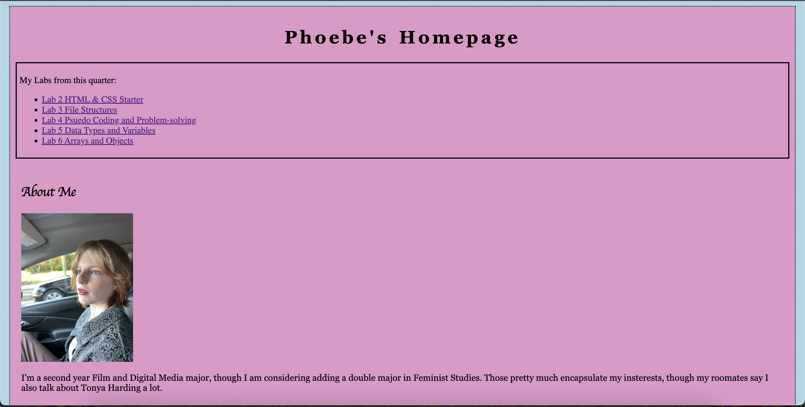

Lab 3 - File Structure and File Transfer
Challenge
For this lab we had to create work with our local file structure and the the index.html files.
Challenges
The main challenges where keeping track of the files and where they were stored. Things like remembering to source the image when adding the selfie or even to change the number associated iwth each lab links were just new details that I haven't gotten quite used to looking out for.
Reflection
Overall I think this assignment has gone very well, there's still a couple things that take some time to get exactly right but it all feels very familiar. I've begun to feel much more confident in my ability to use html and even when I'm not sure what to do, I'm much more able to reference other code to try and udnerstand my options.
Results
